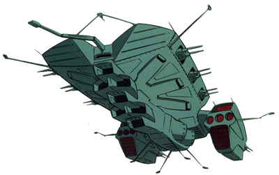

| Dolos Zeon Space Force Supercarrier |
|
|  | |
General and Technical Data |
|
|
Unit type: supercarrier Operator: Zeon Duchy Dimensions: overall length 492 meters; overall width 351.5 meters; overall height 123.7 meters Weight: 144000 tons Construction: High Tensile Steel Propulsion: 5 x rocket engine Hangar capacity: 182 Launch catapults: 7 Fixed armaments: 3x 2-barrel port mega particle cannon turret; 3x starboard 2-barrel secondary mega particle cannon turret; 2x 2-barrel aft mega particle cannon turret; 2x 2-barrel AA machinegun turret |
 RPG quick stats sheet
RPG quick stats sheet | Technical and Historical Notes | |
|
Even larger than the deadly Gwazine class battleship, the Dolos is the culmination of Ghirens superweapons project, the largest mobile suit carrier ever constructed.
Although its MPC turrets do not have the raw firepower of the Gwazine, the Dolos has a reasonable armament for a ship its size, eight mid-size MPC turrets allowing for a reasonable broadside. The front of the ship contains the massive mobile suit hangar, housing a devastating 182 mobile weapons and an unprecedented seven launch catapults, allowing one Dolos to carry more mobile suits than Solomon and A Baoa Qu combined. Its AA capacity is small, two turrets on a movable arm placed to protect the launch catapults. However, the Dolos has the thickest armor of any Zeon warship, making it impervious to most non-beam fire. While the Dolos' MS capacity is enormous to a frightening degree, the ship has two principle design flaws. First, the huge MS hangar forces the MPC turrets to be placed in odd locations, giving the ship zero firepower at its fore, top or bottom firing arcs. Secondly, while the number of catapults it sports is impressive, even with seven catapults it takes an abysmal 8 minutes and 20 seconds to launch the entire hangar compliment, forcing the ships 182 MS to engage the enemy piecemeal in an ambush. However, despite these two flaws, the Dolos works amazingly well as a defense oriented warship. |
|